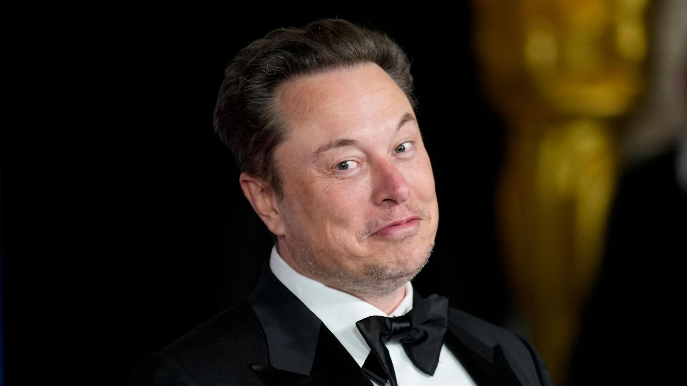

Musk says Tesla investors backing pay deal
Elon Musk, CEO of Tesla, has announced that shareholder votes are currently strongly supporting a record-breaking payout to him and a plan to relocate the company's legal headquarters to Texas.
The proposed pay deal for Mr. Musk, initially valued at $56 billion when agreed upon in 2018, is one of several items shareholders are voting on.
An official announcement on the vote's outcome is expected following a meeting scheduled for Thursday.
Following news of investor confidence in the proposals, Tesla's stock opened trading with a more than 6% increase. Analyst Dan Ives of Wedbush Securities interpreted this rise as a positive indicator that investors expect the deal to proceed, thus mitigating concerns about Musk's potential departure from the company.
"In essence, if this proposal had been rejected, it could have led to various negative outcomes, potentially including Musk stepping down as Tesla's CEO," Ives noted in a recent analysis.